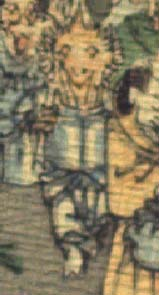

黄色い肌の鬼。頭頂は禿げ、角が1本生えている。頭の脇から毛がもしゃもしゃと生えている。目は小さく、鼻は低く、あごは長い。白い衣服を身に着けている。右手で棒状のものを担いでいる。
著作者：J.Dautremer／出典：親書誌：U426_nichibunken_0123：Le vieillard et les démons／日付：2006／資源識別子：U426_nichibunken_0123_0001_0006
Copyright (c)2010- International Research Center for Japanese Studies, Kyoto, Japan. All rights reserved.